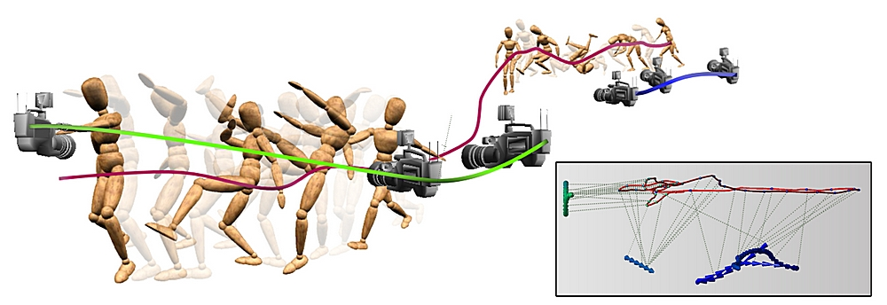
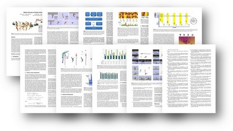
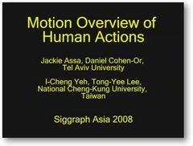
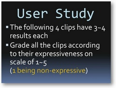

|
Motion Overview of Human Actions
Jackie Assa
Daniel Cohen-Or
I-Cheng Yeh
Tong-Yee Lee |
|
 | |
| Abstract | During the last decade, motion capture data has emerged and gained a leading role in animations, games and 3D environments. Many of these applications require the creation of expressive overview video clips capturing the human motion, however sufficient attention has not been given to this problem. In this paper, we present a technique that generates an overview video based on the analysis of motion capture data. Our method is targeted for applications of 3D character based animations, automating, for example, the action summary and gameplay overview in simulations and computer games. We base our method on quantum annealing optimization with an objective function that respects the analysis of the character motion and the camera movement constraints. It automatically generates a smooth camera control path, splitting it to several shots if required. To evaluate our method, we introduce a novel camera placement metric which is evaluated against previous work and conduct a user study comparing our results with the various systems. |
| Paper Download |
 |
| Materials Download |

 |
| Results |
|
| Acknowledgments | We thank Mr. Yueh-Han Lin at Department of Animation Design & Game Programming, TOKO University, Taiwan, for his work in preparing the animation scenes. This work is in part supported by the Landmark Program of the NCKU Top University Project under Contract B0008 and the National Science Council, Taiwan under NSC-96-2628-E-006-200-MY3, and by grants from the Israeli Ministry of Science and the Israel Science Foundation. |
| BibTeX |
@ARTICLE{Assa08, |